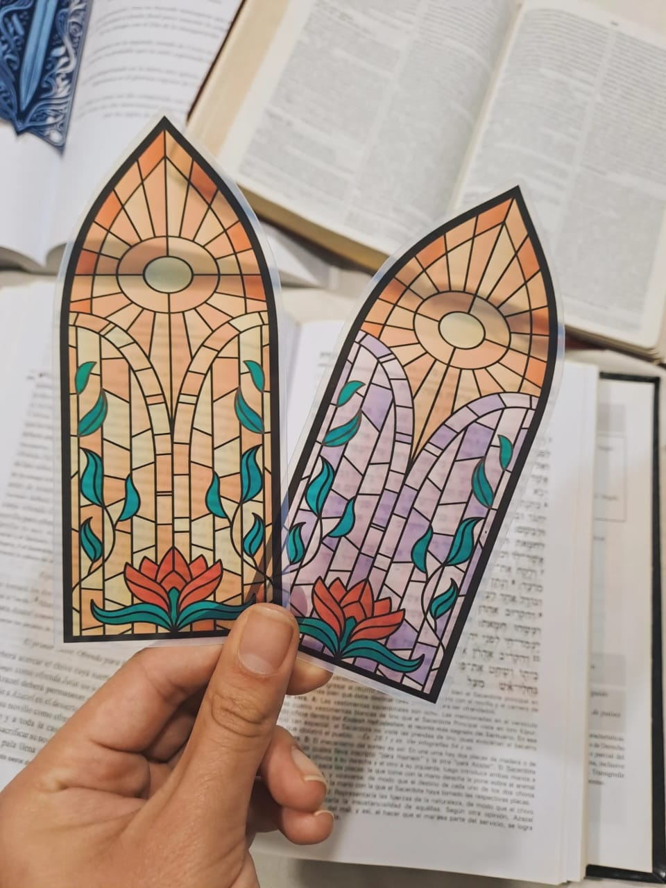
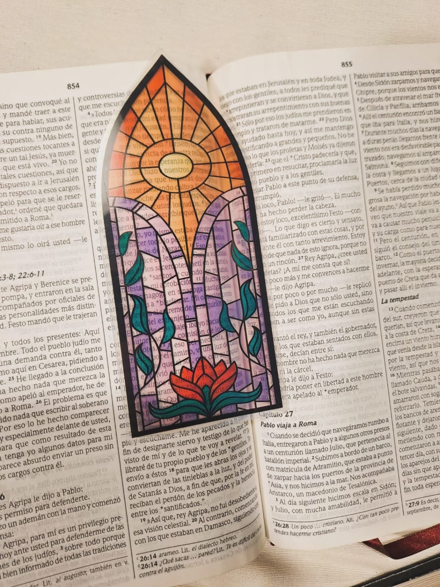

Pack de 2 señaladores · $1.500

Señaladores transparentes diseñados para acompañar tus momentos de lectura, estudio y devocional.
Cada pieza combina un diseño delicado y significativo con un acabado translúcido que deja ver el texto sin perder claridad, creando una experiencia visual única sobre cada página.
Son livianos, resistentes y plastificados, ideales para el uso diario sin que se doblen ni se deterioren fácilmente. Perfectos para tu Biblia, libros o cuadernos, y también como un regalo especial con propósito.

✨ Diseños inspirados en lo espiritual, lo bello y lo eterno
✨ Terminación plastificada para mayor durabilidad
✨ Material translúcido que no tapa el texto
✨ Livianos y cómodos de usar
✨ Ideales para Biblia, libros y cuadernos
Un detalle simple que acompaña y embellece cada momento de lectura.